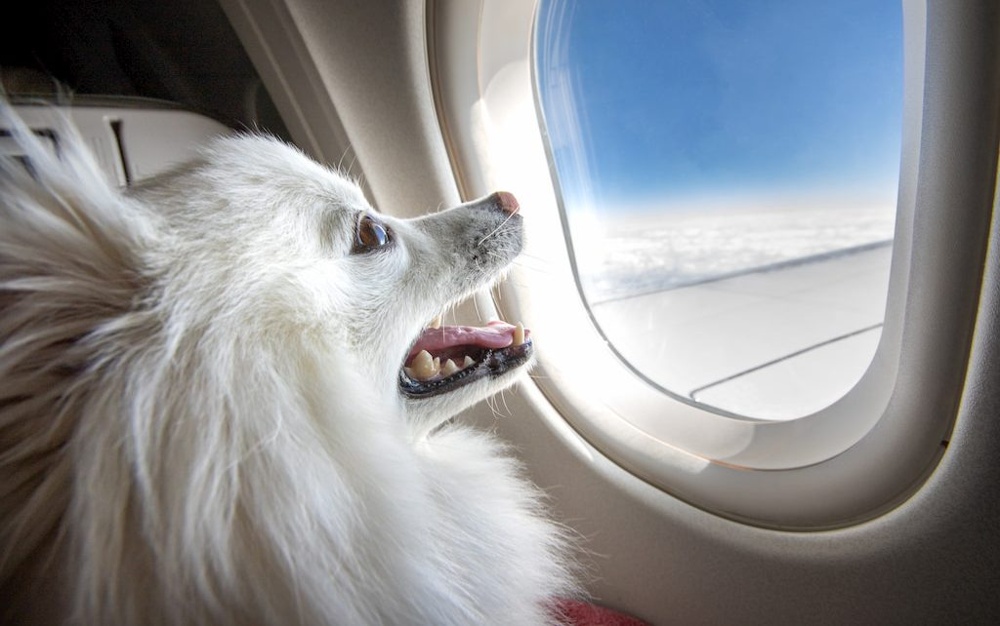

Floating Amongst the Clouds: Exploring the World by Balloon
Experience the thrill of soaring high above the ground and taking in breathtaking views of the world below in a hot air balloon. From the tranquil countryside to bustling cityscapes, discover the beauty of diverse landscapes from a new perspective.

Paws and Passport: Exploring the World with Your Pet
National parks offer some of the most beautiful and diverse landscapes in the world, and now you can share the experience with your four-legged friend. From hiking trails and scenic drives to pet-friendly accommodations, discover the best ways to explore the great outdoors with your furry companion.
Step Back in Time: A Historical Tour of London
Immerse yourself in the rich history of London, from the Tower of London to the British Museum. Walk in the footsteps of royalty and discover the stories of this iconic city, all while enjoying the modern amenities and comforts of a perfect vacation.